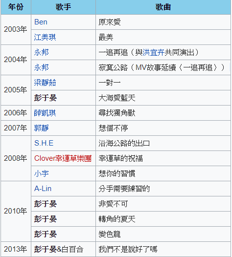

彭于晏
'彭于晏（1982年3月24日－），知名男演員，出生於台灣 澎湖縣，13歲和家人移民到加拿大，進入加拿大英屬哥倫比亞大學，主修經濟學。大二暑假外婆過世，他回台奔喪，被導演邀請參加甄選演出偶像劇《愛情白皮書》。彭于晏回憶說：「我抱持打工的心情去嘗試，當時也沒簽任何合約就去拍戲的。」因進入演藝圈而休學專心拍片。
離開遇見你的那條街,卻離不開,那一年轉角的夏天......2010彭于晏最深情的告白!
在彭于晏的首張EP中，除了節奏強勁的同名舞曲「非愛不可」之外，「轉角的夏天」更是一首讓人動容的催淚情歌。為了讓MV中的戲劇情緒張力更足，彭于晏也特別邀請到他另一位好朋友、也是拍過許多出色戲劇的許瑋甯跨刀演出MV。在這MV中，彭于晏與許瑋甯扮演一對相愛卻無法相守的戀人，詮釋一對戀人從相戀到分開的心境轉折。彭于晏的演唱不賣弄技巧，卻很誠摯動人，感染力十足地唱出了每一個對已逝戀情懷念不已的人的心情。
愛上了,就勇往直前！2010用音樂大聲宣言,
